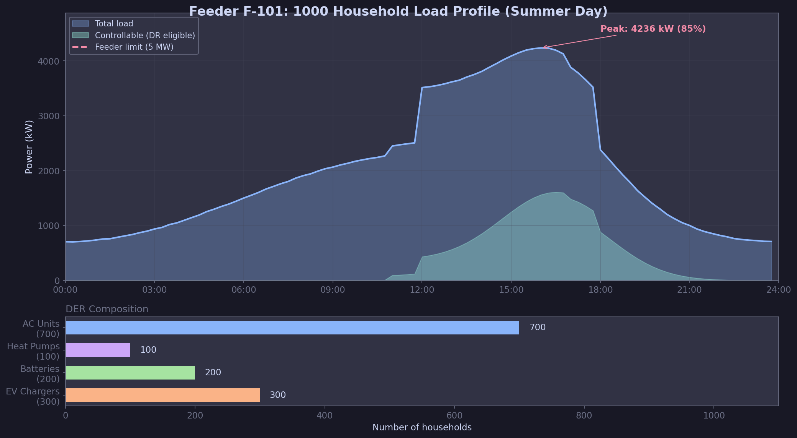
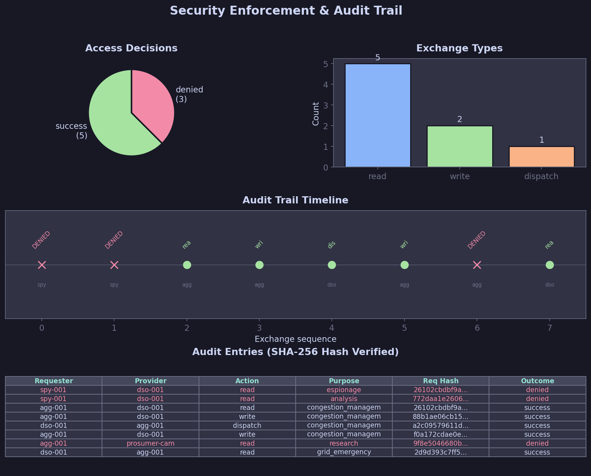
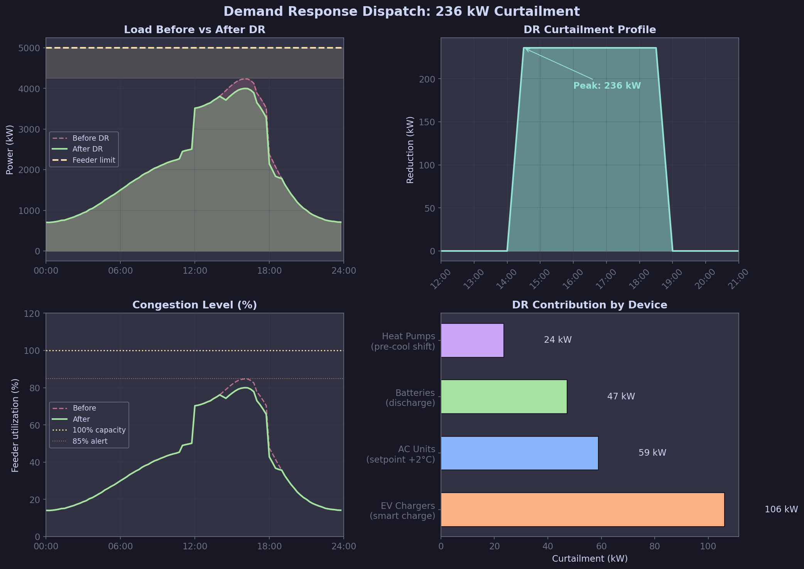
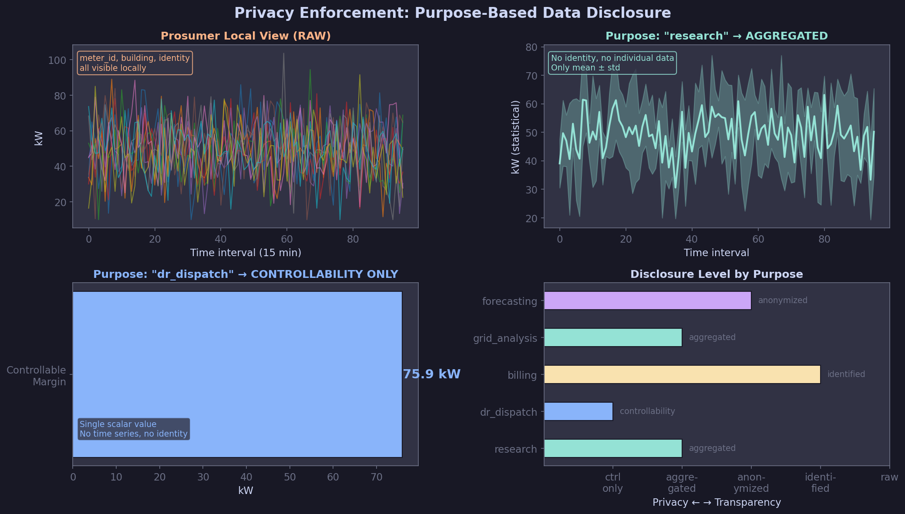
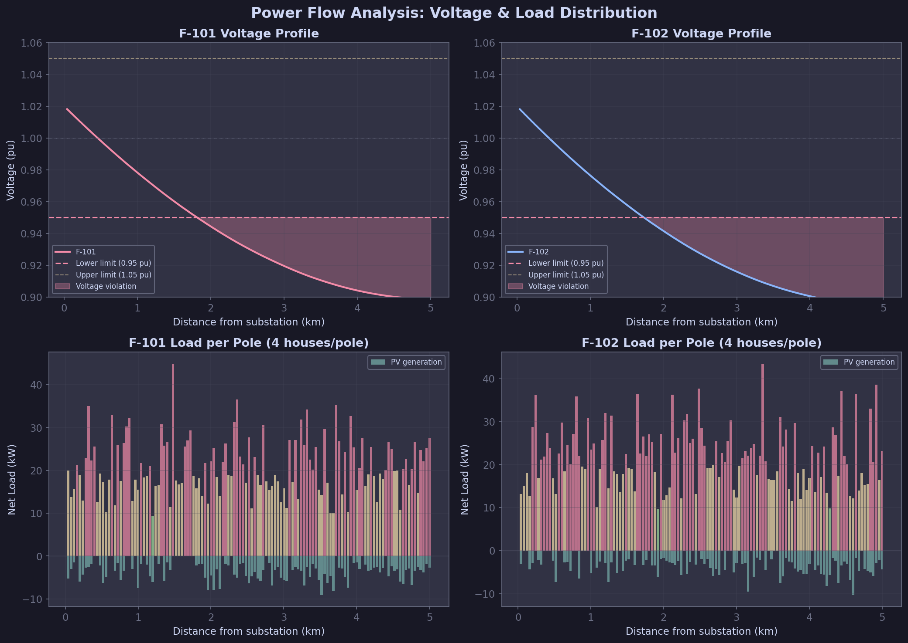
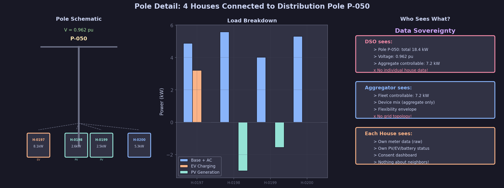

Data Space Grid — 研究プロトタイプ
1000軒のDR制御 × セキュリティ × プライバシー
→ / Space で次のスライドへ
→ 全員の要求を同時に満たす仕組みが必要
データの主権を保持したまま、
信頼された仕組みでデータを交換する
実データは元のノードに留まる。
共有されるのはメタデータのみ
全てのデータ交換に
機械実行可能な契約が必要
「混雑管理」で渡したデータは
他の目的に使えない
全交換をSHA-256ハッシュ付きで
改ざん不可能な形で記録
| 層 | 名称 | 責務 | 実装 |
|---|---|---|---|
| 5 | Access / Exchange | 実際のデータ転送 | REST API + Kafka |
| 4 | Policy / Contract / Consent | アクセス可否の判定 | 契約状態遷移マシン + ポリシーエンジン |
| 3 | Catalog / Discovery | データアセットの発見 | フェデレーテッドカタログ |
| 2 | Semantic Model | データの意味の統一 | CIM / IEC 61850 / OpenADR |
| 1 | Identity / Trust | 認証と信頼の確立 | Keycloak OIDC + mTLS |
各層が独立した責務を持ち、上位層は下位層に依存
Port 8001
見えないもの: 個別住宅データ
Port 8002
見えないもの: 系統トポロジ
Port 8003
見えないもの: 隣の家、系統
定格容量: 5,000 kW (5 MW)
現在負荷: 4,236 kW (85%)
EV充電 + エアコンの集中 → 混雑!
| 🔌 EV充電器 | 300軒 | 3-7 kW |
| 🔋 蓄電池 | 200軒 | 5-13 kWh |
| ❄️ エアコン | 700軒 | 1-2.5 kW |
| 🌡️ ヒートポンプ | 100軒 | 1.5-3 kW |

DENIED 契約がACTIVEではない (status=offered)
DENIED 感度ティア違反 (HIGH データに unknown ロール)
SUCCESS ACTIVE契約 + 正しい目的 + MEDIUMティア
DENIED 同意が即時撤回されていた
EMERGENCY 系統安全のため特別アクセス（監査記録付き）

Aggregator が提案
条件を摺り合わせ
データ交換可能に
期限到来で終了
| 目的 | congestion_management | この目的以外では使用不可 |
| 操作 | ["read"] | 読み取りのみ |
| 保持期間 | 30日 | 30日後に削除義務 |
| 再配布 | 禁止 | 第三者に渡せない |
| 緊急時 | DSO override 可 | 系統緊急時はDSOが優先 |

ピーク: 4,236 → 4,000 kW
混雑率: 85% → 80%
配信精度: 94%
| 🔌 EV スマート充電 | 106 kW |
| ❄️ AC 設定+2℃ | 59 kW |
| 🔋 蓄電池放電 | 47 kW |
| 🌡️ HP 事前冷却シフト | 24 kW |

生データはプロシューマーノードから絶対に出ない
| 目的 | 出力 |
|---|---|
research | 統計値のみ (平均±σ) |
dr_dispatch | 制御マージン (1スカラー値) |
billing | 同意付き身元データ |
forecasting | k-匿名化 (k=5) |
同意撤回 = 即座に拒否
「そのうち反映」ではなく「この瞬間から」

変電所 (66/6.6kV) → 2フィーダー
→ 250電柱 × 4軒/柱 = 1,000軒
EV+ACの集中 → 末端電柱で
162柱が 0.95pu 以下に違反
末端のEV/蓄電池/ACを制御
→ 1,043 kW 削減
→ 違反 162 → 119 (26%改善)

DSOは柱ごとの集約負荷のみ。Aggregatorは柔軟性のみ。各家庭は自分だけ。
→ 安心してデータを出せるようになった
→ 競争優位を守りながらサービスを拡大
→ 安心してDRに参加できるようになった
コネクタの仕組みは汎用的。セマンティックモデルを差し替えるだけで応用可能。
病院 / 研究機関 / 患者
匿名化臨床データの共有
患者がスマホから同意撤回
OEM / サプライヤー
品質データの契約付き共有
製造パラメータは非開示
鉄道 / バス / タクシー
匿名化乗降統計の共有
個人の移動履歴は保護
農家 / 流通 / 小売
生産履歴トレーサビリティ
産地偽装の検出
国際動向: GAIA-X, Catena-X (自動車), Manufacturing-X, European Health Data Space
| 技術 | 用途 |
|---|---|
| Python 3.11+ | 全コンポーネント |
| FastAPI | REST API |
| Pydantic v2 | セマンティックモデル（実行可能な仕様） |
| Keycloak 26.x | OIDC認証基盤 |
| Kafka (KRaft) | 非同期イベントバス |
| SQLite / PostgreSQL | ローカルストア |
| Docker Compose | フルスタックオーケストレーション |
322テスト（226 unit + 96 integration）
全てのセキュリティパターンをカバー
make setup && make test
python examples/congestion_management_demo.py
フェデレーテッド・データスペースで
信頼と主権を保ちながらエネルギーデータを共有する
github.com/lutelute/data-space-grid
MIT License — 誰でも利用・改変可能
日本語解説書: docs/GUIDE_JA.md (20章, 1693行)
デモ: examples/congestion_management_demo.py